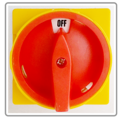
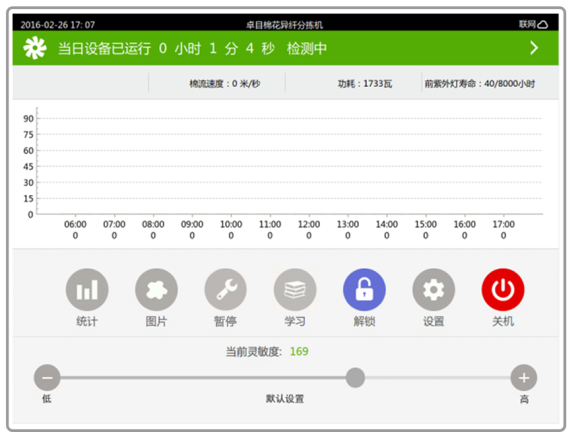

清除机快速指南
一、简易操作流程
1.顺时针旋转右侧面板的总开关(见图1)，工控机及白光灯管主系统通电。
2.顺时针旋转右侧面板的紫外/风机开关(见图2)，风机及紫外灯管通电。
3.检查右侧面板的气压表数显值是否正常(见图3) (≥5.8)。
|  |  |
 |
图1 电源总开关 |
图2 紫外/风机开关 |
图3 气压表 |
4.工控机启动首界面(见图4),设备开始进入棉流学习阶段。持续时间约5分钟。此时设备喷阀无动作。
5.随后设备监测有棉流会自动进入检测模式，开始检测异纤并打击，统计数据开始更新。
6.如打击次数过高或者过低，先点击"解锁"，输入密码并点击"确认"。点击最下面一排的"+"或"-"可以实现灵敏度的调节。
"-"表示降低异纤检测灵敏度，喷阀打击次数下降，异纤袋的落花量减少。
"+"表示提高异纤检测灵敏度，喷阀打击次数上升，异纤袋的落花量增加。
7.如需要监视异纤检测照片，先点击"解锁"，然后输入密码并点击"确认"。点击"图片"进入"异纤图片"界面查看打击的异纤图片（见图5）。
8.关机：点击主界面的"关机"，在新弹出的窗口点击"确认"，等待工控机黑屏后，再关闭"紫外/风机开关"，最后关"总开关"。
|  |  |
图4 |
图5 |
二、清洁维护流程
1.在正常开机状态下，点击工控机主界面(见图6)的"暂停"，设备停止异纤检测及打击。
 |
图6 |
2.拍下右侧面板的紫外/风机开关(见图7)，风机及紫外灯管断电，避免人员视力损伤。
 |
图7 紫外/风机开关 |
3.将背景灯箱下面的白色活动挡板下翻打开。
4.单手扶稳背景灯箱，将其两端快速夹后翻打开，下翻背景灯箱，玻璃通道外露(见图8)。
 |
图8 |
5.观察整个棉流通道内是否有挂棉现象，如有请及时清理。
6.用清洁剂蘸湿麂皮巾，注意请勿滴水，从玻璃上部开始按照其水平走向来回从上至下反复擦拭。如果较脏需要清洗麂皮巾，擦拭直至4块玻璃干净为止。
7.清洁最后务必拧干麂皮巾擦拭，确保玻璃无肉眼可见水渍污迹影响检测效果。
8.清洁后，将背景灯箱上翻推拢，锁紧两侧快速夹，再上翻活动挡板封闭管路。
9.然后点击工控机操作界面上的"恢复"按钮，顺时针旋开右侧面板的紫外/风机开关，点击工控机主界面的"学习"，通道走棉后设备恢复正常工作。